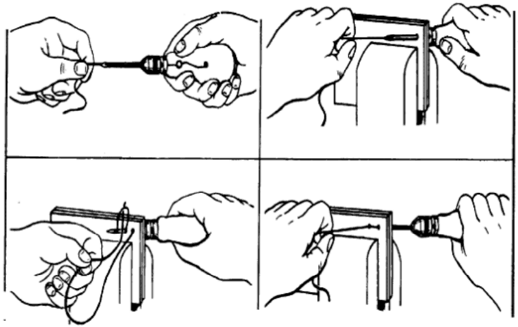
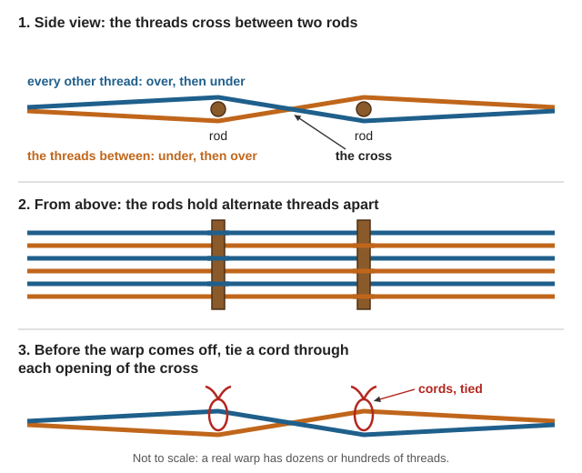
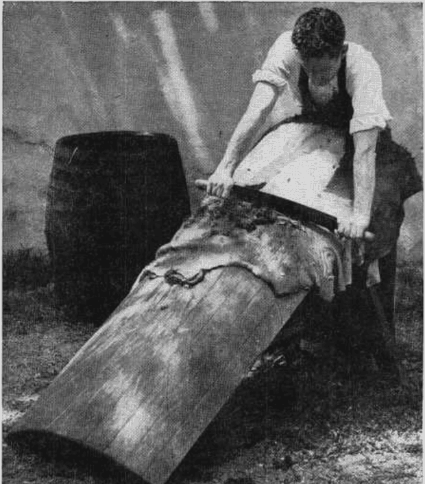
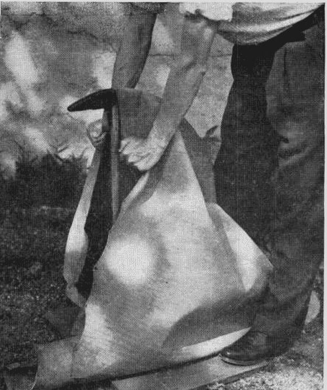
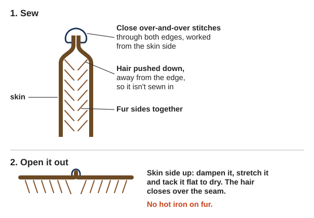
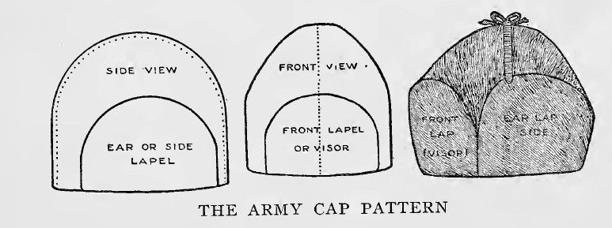
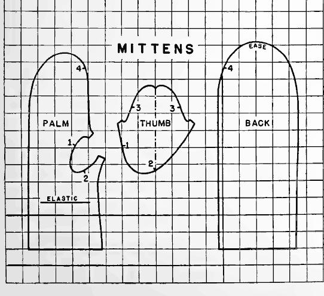

How to keep a household clothed and shod for years with no stores: dressing for our cold-wet winters, heavy mending, sewing machines, wool from sheep to yarn, linen, natural dyes, weaving, knitting, tanning, clothes from furs, buckskin and felt, and boots and moccasins. Simple stitches, darning, tire sandals and boot-grease recipes are in the Make-Do Household guide; this guide goes further. The books are in Clothing-Leather\ (Sewing-Mending, Knitting-Hats-Gloves, Spinning-Weaving-Dyeing, Tanning-Hides, Shoes-Boots, Cold-Weather-Clothing), Homestead-Skills\Household-Make-Do, Homestead-Skills\Food-Crafts-Tools and Trapping\Hides-Tanning.
⚠️ Rules that prevent the worst outcomes
Wet, not cold, is what kills here. Wear wool under a waterproof shell, no cotton in the winter rain, and change to dry socks at least twice a day (TC 21-3, p. 12).
Fleece and nylon melt onto skin. Wear wool or cotton at the stove, at the forge and near any fire (rule of thumb).
Never use the old poisons in tanning, fur and dye recipes: arsenic, mercury chloride, chrome, sulfuric or oxalic acid, gasoline, burning sulfur. Brains, bark, salt, alum, soap and smoke are enough.
Wear gloves with brains (deer and elk can carry chronic wasting disease) and lime (rule of thumb), and never put cut or cracked hands in alum liquor (USDA FB1334, p. 22).
Dye pots, tanning barrels and mordants never go back to food use, and stay away from children (rule of thumb).
Wet leather burns easily. Dry boots slowly; leather hotter than your hand can bear is almost sure to burn (USDA FB1183, p. 9).
Dressing for our cold-wet winters
Our winters are "cold-wet" — near freezing, freeze-thaw, rain, wet snow, slush and mud — the hardest weather to dress for. You need a waterproof or water-repellent, windproof outer layer over insulation, and waterproof footwear. "Cold-dry" weather (below 14 °F) is colder but easier (TC 21-3, p. 6; cold-wet vs cold-dry). On the valley floor most winter nights are in the 20s–30s °F, with weeks of rain from November to March (rule of thumb).
Trapped air insulates; a tight outer layer crushes it (drawing)
D
Keep it dry
Wet clothing carries heat away far faster than dry
Wool, not cotton. Cotton underwear, T-shirts, jeans and flannel lose what little warmth they have when wet and pull heat from the body. Wool keeps you warm when wet (hunter manual, p. 77). The Army's fallback is all-wool clothing, except perhaps a windbreaker (FM 21-76, p. 176). Cover the head and neck too — their blood vessels don't narrow in the cold the way the hands' do (rule of thumb).
Feet (TC 21-3, pp. 12, 41–42): trench foot (photo) comes from days of cold, wet feet, not from freezing; in bad cases the skin dies and amputation follows.
Change to dry socks at least twice a day.
Dry and massage your feet.
Dry leather boots whenever you can.
Wear socks that aren't tight, and only one pair of cushion socks at a time.
Hang items separately, high in the shelter, away from the stove and steaming pots. Nylon melts if dried too close.
Pin damp socks inside your outer layer as you walk. Never put damp clothes in a sleeping bag.
Dry leather slowly; boots can dry between the sleeping-bag shell and liner.
Bedding: wet down loses much of its warmth. No bag? Sew two layers of cloth and stuff them with dry leaves, pine needles or moss (FM 21-76, p. 177). Wool blankets beat heavy cotton quilts (Household Discoveries, p. 53).
Cut thread about 36 inches, never more than a yard (it tangles). Cut it; never bite or break it.
Basting (drawing) holds work in place for a while. Backstitch (drawing) is the strong seam. Catch (cross) stitch (drawing) holds hems invisibly. Whipstitch (drawing) binds raw edges.
Darns are for holes under 1 inch; patches for bigger ones (pp. 39, 43; four darns; top patch). Cut a top patch 2½ inches bigger than the hole all round, with ½ inch turned under, its grain matching the garment's.
Mend early (ABCs of Mending, pp. 5–6): overcast fraying seams, tape-stay pocket corners, rework raveled buttonholes with buttonhole stitch (drawing), and sew buttons on with a thread "shank" so the cloth isn't strained.
Thread the awl, leaving ½ inch out of the needle. Pull out enough thread to reach the end of the seam.
Push the needle through; pull all that slack through to the underside; hold it and withdraw the needle.
Push the needle in a stitch-length away and pull it halfway back, forming a loop underneath.
Pass the slack thread through the loop. Pull the needle out, then pull handle and thread equally hard to lock the stitch in the middle of the cloth. Repeat.

Pull out slack; push the needle through; pass the slack through the loop underneath; pull handle and thread equally to lock the stitch (TM 4-42.21, p. 80).
Waxed thread for leather (The Saddler, p. 15; Hasluck, p. 36): twist 3–6 strands of flax (linen) thread. Taper each end first by untwisting it on your thigh and pulling it apart. Saddler's wax works best near 75 °F; cold wax is brittle. For shoes use waxed flax, never cotton — it is stronger, and the wax seals the stitch holes (FB1183, p. 9).
Tell the fiber before you trust a salvaged garment (Turner, p. 95):
Burn a few threads
Fiber
Burns fast, little ash, no smell
Cotton
Burns slowly, black ball of ash, smells like burning feathers
Wool
Melts and drips into a hard bead
Synthetic — keep it away from fire (rule of thumb)
Boiling a sample in weak lye (in an enamel pot) destroys wool but leaves cotton — so never wash wool with lye or chlorine bleach (rule of thumb).
A first garment with no pattern (Turner, pp. 122–123): a kimono nightgown takes cloth twice the shoulder-to-floor length, plus a hem. Fold it crosswise, lay the drafted pattern on the fold, and cut the neck with the garment on the wearer. Its long straight seams (French or felled) are good machine practice. To remake old clothes, rip, wash and press first, and check the cloth is worth the work (Make-overs from Coats and Suits, p. 4).
Lice live in seams: hang infested clothes in the cold, then beat and brush them. This does not kill the eggs (FM 21-76, p. 177).
Pick out the oil holes. Run the machine while squirting kerosene or cleaning fluid into every hole and bearing, then oil each one freely. Never oil the tension discs. Never use gasoline indoors.
A stuck screw: soak it with cleaning fluid. "Left is loose, right is tight" (p. 5).
Replace a dirty wool wad in a long-bobbin oil well with raw wool (p. 8).
Then one drop per hole after each day's work, and now and then when idle (p. 10).
Skipped stitches: usually a needle of the wrong length or set wrong — the short groove faces the shuttle point. Sharpen a dull needle on a fine emery stone; scratch marks on the machine to record the needle length (pp. 11–12).
Many electric heads from about 1900–1960 fit a treadle cabinet, run by a 3/16-inch leather round belt if the hand wheel has a belt groove. Stock spare needles, bobbins and belts now (rule of thumb).
Shearing (Raising Healthy Sheep, pp. 81–82; handling the fleece; Sheep shearing): once a year when spring warms. If cold, wet weather follows, house the sheep 10–14 days or leave some wool on. Shear white sheep first, keep colored wool apart, and never throw hay over sheep's backs — it ruins the fleece. Here, shear in late April–May as the rains ease (rule of thumb).
Washing without felting:
Raw fleece: soak a few ounces at a time in warm water with mild soap for about 30 minutes. Don't stir it or it felts. Rinse in water of the same temperature (CSU 4-H Spinning, p. 17).
Finished woolens: lukewarm suds (about 95 °F), rinses the same temperature. Never boil, rub, wring or twist; squeeze, pull to shape and dry away from the fire (USDA, p. 9; Household Discoveries, p. 206).
Local soap: the bulb of soaproot lathers "like ordinary soap" and has no alkali, which suits wool better than lye soap (Chesnut, p. 332). It grows on dry, rocky slopes here (rule of thumb).
Carding and combing (CSU, p. 17; Hooper, p. 43): carding (hand cards) gives soft, fuzzy yarn; combing gives smooth yarn. Spread wool on one hand card, draw the other across it a few times, and roll the fibers off into a soft roll. No cards? A metal dog comb, or your fingers.
Tie on an 18-inch leader of yarn. Twist the spindle and draw the fibers out as the twist runs up. Too much twist makes drafting hard; too little and the yarn falls apart.
Wind a skein around a chair back and tie it in 4 places. Soak it 20 minutes and hang it to dry with a weight. A balanced skein hangs straight.
Angora rabbits give wool from a hutch: shear every 10–12 weeks, leave ½ inch of wool in winter, and keep newly shorn rabbits warm (USDA Handbook 309, p. 61).
Climate: moderately cool, damp weather while growing and a dry spell at harvest. Heat and drought make it ripen early and short (p. 7). Here, sow very early on moisture-holding soil, or irrigate (rule of thumb).
Sow thickly — about 6 pecks an acre — so stalks grow tall and unbranched (p. 11).
Pull, don't cut, when the stalks yellow and the lower leaves drop (p. 12).
Ret to rot the gum that holds fiber to stalk: spread it on grass 2–8 weeks, turning once (dew retting), or weight bundles under soft water 6–15 days and watch closely — "a few hours' delay often causes loss" (pp. 16–17).
Stinging nettle: gather with long rubber gloves and sleeves (OSU EM 9373, p. 2). Cut tall creek-side stalks after they brown in late summer or fall, then ret, break and scutch like flax (rule of thumb; no book here covers nettle fiber).
Mordant with alum (USDA, p. 10): for each pound of dry wool, dissolve 4 oz alum and 1 oz cream of tartar in 4–4½ gallons of soft water. Bring it slowly to the boil, simmer 1 hour, and leave it overnight. The Navajo used raw alum, or water from burned green juniper needles (Navajo Native Dyes, p. 19). Skip the "chrome" mordant on the same USDA page — it causes cancer (see the last section).
The simplest loom (Hooper, pp. 60–61): the one part every loom needs is the cross in the warp (securing the crosses) — alternate threads cross between two rods so they can't tangle. A board with the warp wound around it and two rods holding the cross is a working loom. For 10-yard warps, build a warping board (drawing) at least 6 ft × 1 ft with smooth hardwood pegs 1 inch thick, and tie cords through both crosses before taking the warp off, or it "will be irretrievably spoiled" (pp. 64–68). The next step up is the foot-power loom (Worst, p. 11; parts named). Picture: Warp and weft.

The cross keeps alternate threads in order; cords tied through it before the warp comes off keep it from tangling (a diagram drawn for this guide).
Socks: measure your own rounds per inch and adjust the pattern (p. 133). Graft the toe closed so no seam blisters the foot (heel, sole and toe) (p. 139); knit extra into the heel (p. 143).
Helmet: 100 stitches in knit 2, purl 2 ribbing, with a face opening (p. 28); balaclava (p. 31); mittens (p. 71).
Hold a hide until you can work it (USDA FB1334, p. 8): salt it with 1 lb of salt per lb of hide; it keeps 3–5 months. Never let it freeze or heat. Work in wooden barrels, never iron (tools). Lime takes off the hair in 6–16 days (unhairing); a gallon of vinegar removes the lime (pp. 10–14).

Unhairing on a tanner's beam: push the loosened hair off with the dull edge of a two-handled fleshing knife (USDA FB1334, p. 11).
Per hide, steep 30–40 lb of oak or hemlock bark, ground no coarser than corn, in 20 gallons of boiling water. Use rain water, and keep it away from iron.
Strengthen the liquor every 5 days; then bury the hide in wet bark for 6 weeks, and again for about 2 months.
It is done when a cut edge shows no white streak. Sole leather needs 2 months more.
Finish with dubbin (equal parts tallow and neatsfoot or cod oil), slicking (drawing) and staking (drawing).

Staking: while the leather dries, work it back and forth in every direction over a dull-edged stake to soften it (USDA FB1334, p. 21).
Local bark:tanoak bark "has high tannin content" and was once used widely to cure leather (USDA NRCS, p. 2); Oregon white and black oak bark also work. Sudden oak death kills tanoak and is under quarantine in Curry County, next door: don't haul tanoak bark, wood or leaves out of infested areas (rule of thumb).
Soak the skin in water, or water with wood ashes, until the hair and the grain (outer skin) slip.
Flesh it on a beam (a fleshed hide), then scrape off hair and grain.
Boil the brains about an hour in a gallon of water; cool until you can hold your hand in it. Work the skin in it and wring it out.
Pull and stretch it without stopping until it is dry. Repeat if it is still stiff.
Smoke it over a cool smudge of punky hardwood inside a little tepee of sticks. Unsmoked buckskin dries hard every time it gets wet.
Soap or lard can replace brains. Wear gloves with brains — the prions of chronic wasting disease concentrate in brain and spinal cord; use soap or egg yolk if in doubt (rule of thumb).
Dissolve 1 lb alum in 1 gallon of water. Dissolve 4 oz washing soda and 8 oz salt in ½ gallon of water, and pour it in very slowly.
Thicken with flour to a paste; spread 2–3 coats on the flesh side, a day apart.
Rinse, oil, and work the skin over a stake as it dries. If it dries stiff, dampen it and work it again.
Rawhide (AFH 10-644, p. 257): flesh the hide, cover the hair side with wet hardwood ashes, roll it up for several days, and scrape off the hair. Wash it, stretch it in a frame and dry it slowly in the shade. Soak to soften.
Once a hide is tanned (see Tanning hides above), fur is handled much like a heavy, napped cloth (Farnham, p. 198). It goes mostly into coats and coat linings (AFH 10-644, p. 176). Make fur clothes loose, with room for winter clothes underneath (Farnham, p. 199), and use whole skins where you can: seams are the weak point (p. 237).
Awls, three-sided needles, waxed thread, sinew, rawhide lace and a stitching clamp
Awl: the frontier "moccasin awl" was the back spring of an old clasp knife in a buckhorn handle (Farnham, p. 260). A sliver of bone makes a needle or an awl (AFH 10-644, p. 251). A leather punch makes holes for lacing (MP614, p. 5).
Needles: a three-cornered glover's ("buckskin") needle cuts its own way through leather (Farnham, pp. 206, 235). For fur, use a fine needle so the holes stay small (MP614, p. 6). Push needles through thick work with a leather palm thimble (AFH 10-644, p. 254; drawing).
Thread (Farnham, p. 200): linen for most furs, carpet thread for big skins, waxed ends (see Mending and hand sewing above) for heavy buckskin. A small thread doubled beats one big thread, which cuts tender skins. Beeswax keeps thread from cutting leather (MP614, p. 5).
Stitching clamp: two wooden jaws held between the knees grip the leather while both hands sew (Hasluck, p. 28). Make one from two curved oak barrel staves, 2 ft long, screwed to a block (p. 30; drawing).
Sinew thread splits into even threads, works easily when damp, and shrinks tight and hard as it dries, so it suits leather and buckskin best. Use the long ligaments beside the backbone rather than leg tendons (Kephart, Woodcraft, p. 322).
Scrape off the flesh with the back of a knife (Kephart, p. 322), and dry the sinew (FM 21-76, p. 151).
Pound it to split the fibers apart (FM 21-76, p. 151).
Soak it in plain water until soft. Twist it back and forth until the fibers part, and peel off strands as thick as you need (AFH 10-644, p. 252).
Roll each wet strand down your thigh to twist it. Knot one end and roll the other to a hard point (Kephart, p. 323).
Punch a hole with the awl and push the point through, or thread a needle (AFH, p. 252). To join two strands, lay the ends side by side and tie a figure-eight knot in the pair (Kephart, p. 323).
Rawhide lace (FM 21-76, p. 151): dry the skin (the hair can stay) and cut it dry, in one strip about ¼ inch wide, round and round from the middle out. Soak it 2–4 hours and lace it on wet and stretched; it dries hard and strong. For even laces, pull a round of hide between an awl and a knife set in a board (Kephart, Woodcraft, p. 320; splicing two thongs).
Cutting fur and leather
Cut from the skin side, match the run of the hair, and piece small skins together
Flatten the skins first. Sew up holes and cuts, dampen the skin side, and tack each skin flat, fur down, to dry (Farnham, pp. 205, 240).
Test the pattern in old cloth (Farnham, p. 249). Every needle hole in leather stays, so check the fit before you cut or sew (MP614, p. 5).
Mark and cut from the skin side. Draw round the pattern with chalk, then cut just through the skin with a razor blade or a very sharp knife and pull the pieces apart. Scissors cut the hair (MP614, p. 6; Farnham, p. 199). Hairless leather: a razor blade for hard, shears for soft (MP614, p. 5).
Match the run of the hair. Lay every piece with the hair running down the body (Farnham, p. 245), and the seams won't show (MP614, p. 6). Keep the dark stripe of each back in the middle of its piece (Farnham, p. 206).
Match the color by sorting skins into lots of one shade; odd shades are just as warm (Farnham, p. 240). Cut a left and a right for mittens and sleeves (p. 250).
Piecing small skins (Farnham, pp. 239–240): trim each to a rectangle of back skin, all the same size, round a cardboard template (a muskrat gives about 6 × 8 inches), and collect extra to choose from. Matched with care, many small pieces look like one (MP614, p. 11).
Rabbit skins: the best come from grown rabbits in the cold months; young fryers' skins are weak. On a prime skin the fur springs back when rubbed from tail to head (USDA FB1730, pp. 57–58).
Seams for fur and leather
The fur stitch, backstitch, saddle stitch, lacing, a welted seam, and keeping water out
Push the hair down, away from the edges, so it isn't sewn in.
Sew close over-and-over stitches through both edges, working from the skin side.
If one edge is longer, take slightly longer stitches on that side. Start a long seam in the middle and work each way.
Open it out, dampen the skin side, stretch it and tack it flat to dry; that flattens the seam. No hot iron on fur (Farnham, pp. 207, 245).

The fur stitch from the end: fur sides together, hair pushed in, over-and-over stitches; then opened out and tacked flat (Farnham, pp. 200–201; a diagram drawn for this guide).
Where fur takes strain, as on a mitten's back, sew thin cloth to the skin side. To join fur to cloth, overcast a ½-inch tape to the fur's edge first and sew the tape (MP614, p. 6).
Leather and buckskin:
Running stitch (in and out): quick but weak; only to baste or hold a lining (rule of thumb).
Saddle stitch: one waxed thread with a needle on each end, so every hole holds two threads (The Saddler, pp. 15–16).
Mark where the stitches go and set the work in the clamp.
Make a hole with the awl, pass one needle through, and pull the thread to its middle.
Make the next hole. Pass the left needle through it one way and the right needle through the same hole the other way. Pull both tight.
Repeat. At the end, take one or two stitches back and cut both ends off.
Lacing: punch holes about ¼ inch in from the edges and lace with thongs or narrow leather strips (MP614, p. 16).
Welted seam for coats and jackets: sew a plain seam, pound it open lightly with a hammer instead of ironing, then stitch from the outside about ¼ inch each side of it (MP614, pp. 5, 17; the Army's welt seam is the same idea). Leather that tears easily gets a strip of thinner leather under the seam and an extra row of stitches (Leno, p. 128).
Keeping water out of seams: waxed thread and sinew seal their own holes (FB1183, p. 9; Kephart, Woodcraft, p. 322). Melt equal parts beeswax, tallow and neatsfoot oil and work it into warm, dry leather and its stitching, two or three coats (Kephart, Camping, p. 158). Water gets in most where pieces join, so grease there first (FB1183, p. 10).
Patterns to cut from the wearer
A fur hat with ear flaps, mittens and a liner, a vest, a fur coat lining, a buckskin shirt, leggings and robes
The easy way to a pattern: rip apart an old garment that fits, dampen and press the pieces flat, and cut round them (Farnham, pp. 235, 251). To copy a book's grid pattern, rule 1-inch squares on wrapping paper (MP614, p. 7). Try it in old cloth first, and leave ¼–½ inch for seams (Farnham, p. 249).
Measure round the head across the forehead. Allow for the lining (p. 248) and the thickness of the fur (p. 247).
Crown: two side pieces shaped like an arch, joined by one seam running front to back over the top.
Flaps: two ear flaps and a front flap, each cut twice so there is fur on both sides: eight fur pieces in all.
Sew each part inside out and turn it. Slip a piece of 8-oz duck into each flap to hold its shape, and sew the flaps on. Turn in the crown's lower edge so no raw edge shows.
Line it with wool sewn up like a skull cap, its edges turned in.

The army cap: the crown's side and front, with the ear flap and the visor (front flap) drawn inside them, and the finished cap (Farnham, p. 247).
A cap takes about 4 muskrat or mink skins, or one beaver or large raccoon; muskrat is "as warm as any fur" (pp. 246, 251). Other shapes: a round cap (Farnham, p. 248) and a helmet with ear pieces and a chin strap (MP614, p. 17).
Lay the hand flat on stiff paper, fingers together and thumb out, and draw round it. Add ¼–½ inch for seams.
Cut a back, a palm with a hole where the thumb joins, and a thumb. Make it plenty large.
Leave the wrist 2–3 inches long and turn it back: the fur roll fills the coat sleeve and keeps out the wind.
Sew inside out and turn. Fur on the back with buckskin on the palm and thumb wears well (p. 250).
Liner: woodsmen wear fur mittens unlined, with a knit or cloth liner they can pull out and dry (p. 248). Or cut flannel linings the same size and sew them into the same seams (p. 250). Tack a loose lining to the seams here and there so it doesn't pull out (MP614, p. 11).

A schoolgirl's mittens: palm, thumb and back. To copy them, rule 1-inch squares on wrapping paper (MP614, pp. 7, 11); for a grown hand, draw round the hand as in step 1.
A pair takes 6–8 large muskrat skins or one beaver; a dog or calf skin makes 1–3 pairs (Farnham, p. 251). From a raw hide, use the skin round the leg joints, fur inside (FM 21-76, p. 153).
A vest: buckskin, or calf or colt skin with the hair on, cut high to cover the chest and made and lined like a cloth vest (Farnham, p. 236), with the back as thick as the front (Kephart, Camping, p. 152). Cut the back and fronts from an old coat's back and fronts (MP614, p. 17).
Lining a coat with fur: use a roomy coat as the shell. Make the fur lining the same shape and nearly the same size, sew the two together at the top, and tack them at the sides and hem, so the fur takes little strain and comes out for mending (Farnham does this for a sleeping bag, pp. 236–237). Line the sleeves with cloth (p. 242). Worn, faded short-haired fur still makes good linings (MP614, p. 12). A lined coat takes about 50 muskrat or 6–7 calf skins (Farnham, p. 243); sheepskin is as warm as any fur (p. 203).
Rip apart a comfortable shirt, dampen and press it, and cut round it, with extra room across the shoulders and chest.
Sew it inside out with a three-cornered needle and linen carpet thread, and turn it.
Don't open the front. Leave one shoulder seam open from the neck, and button or lace it.
For fringe, cut a strip 2½–3 inches wide into fringe 1½–2 inches deep and sew it into the seam from shoulder to wrist. Rain drips off it, so the shirt dries faster (Kephart, Camping, p. 152).
It takes 2 large or 3 small hides for a man. Smoked buckskin dries soft and shrinks less. It is fine in dry cold but "cold and clammy" when wet (Kephart, Camping, pp. 151–152): in rain, wear wool under a shell.
Measure round the thigh, knee, calf and ankle over your trousers, and from belt to instep (rule of thumb).
Cut a tapered tube that opens down the outside of the leg and laces or buttons, so it goes on without taking off your boots. A long one hangs from the belt by a strap (Leno, pp. 125–126).
Don't fit the bottom tight. Let it fall over the instep; one that ends at the bend of the foot rubs (Leno, p. 128).
No strap under the foot: it fills with mud and wears through on rocks (Kephart, p. 149).
Use winter skins: 60 for a blanket 5½ × 5 feet, 75 for 6½ × 6 feet. Keep them out in the frost until you cut.
Open each skin up the belly and cut it round and round into one strip: 1 inch wide at the thin belly, ½ inch at the thick back. One skin gives 15–18 feet. Keep the coils in a cool, damp place.
Tie four dry poles into a frame 4–6 inches bigger each way than the blanket, and lean it against something. Lace a cord round the inside, 4 inches in from the poles.
Loop the strip back and forth across the frame, each row through the last, with a slight twist so the hair stands out all round. Smaller loops make a heavier blanket. Pass the strip round twice at each edge.
Let it dry in the frame a day or two, then unlace it.
You can push your fingers through the holes, yet "it alone is warmer than several woolen blankets." It is bulky and heavy and sheds hair (pp. 80–81).
A sewn fur robe (Farnham, pp. 204–208; coyote robe): 4–5 feet wide and 5–7 long, from 20–30 muskrat skins, 12–20 raccoon or fox, or 4–8 sheep or goat. Trim the skins to one size and sew them in rows, and the rows together like a patchwork quilt, fur all one way. Stretch it flat to dry, then line it with cloth over a layer of cotton batting.
Felting wool: hats, boot liners and mittens
Loose fleece rubbed into thick felt with soap, hot water and work
Wool fibers are scaly and curly. Rubbed, and shocked between hot and cold, they lock together and shrink: the same thing that ruins a sweater (Turner, p. 82; Household Discoveries, p. 206). Wool stuffed in shoes packs into a felt sole as you walk, and wool rolled "like dough" on a board turns to felt (Leland, p. 225).
Lay it out in 3–4 thin, even layers, each crosswise to the one below, a third bigger than you want: it shrinks (rule of thumb).
Sprinkle it with hot, soapy water and press it flat with your palms. Rub gently at first, then harder as it holds together (rule of thumb).
Roll it up in a cloth or a mat and roll it back and forth like dough. Unroll, turn it, and roll again (Leland, p. 225).
To shrink and harden it, dip it in hot water, then cold, and knead it (Household Discoveries, p. 206; USDA dyes, p. 9).
Rinse out the soap, pull it to shape over a bowl, a block or a foot, and let it dry. Steamed felt rounds smoothly over a padded bowl (MP614, p. 7; photo).
In one piece, with no seams: lay the wool round both sides of a flat template of stiff card or plastic, a third bigger than the hat, mitten or boot liner. Felt it, cut the opening and pull the template out (rule of thumb).
Sewing felt: cut and sew it like cloth; it doesn't fray. Make mittens and slippers roomy, and back them with cloth, leather or a second layer of felt (MP614, p. 7). Mend a hole by working fine wool into it and rolling it (Leland, p. 225).
Remaking old furs and leather
Old fur coats, leather jackets, gloves, handbags and felt hats cut down into something new
Look in attics and trunks for old leather jackets, handbags, belts, chair covers, fur collars, cuffs, muffs and felt hats (MP614, p. 4). Rip them apart and clean the pieces before cutting. Ripping old work also shows how it was made, and gives you a pattern (Farnham, p. 202).
An old fur coat: shorten it and use the trimmings to patch the worn places; a new collar and cuffs freshen it (Farnham, pp. 273–274). Scraps make linings where color doesn't matter (p. 268), or trim for a hat and mittens (MP614, p. 14).
A leather jacket into mittens: lay the pattern to miss worn spots. Soft suede sews on a home machine; lap the seam across the back and use plain seams elsewhere (MP614, pp. 12–13; pattern). The sleeves make children's slippers (p. 9).
Gloves: to copy a pair, rip an old pair apart, dampen it and press it flat (Farnham, pp. 250–251). Worn glove leather makes patches (MP614, p. 5).
A handbag into moccasins (MP614, p. 9; pattern): draw an oval round the foot with toe room, and add 2 inches all round for the sides. Try it in thick cloth first. Cut one moccasin from each side of the bag, punch holes round the top and the tongue, and lace it with a thong tied at the back.
Felt hats: steam them flat for slipper soles and uppers or mitten backs, or cut strips round and round the hat for laces and straps (MP614, pp. 7–8, 13).
Caring for furs and leather clothes
Drying wet furs, moths and storage, cleaning, and softening stiff buckskin
Drying wet furs and leather, never by the fire:
Squeeze out the water, but don't wring it. Water left in the skin dries it hard (MP614, p. 6).
Hang it by an edge, so air reaches both sides, out of the sun and away from the stove (MP614, p. 6; FB1730, p. 59).
If the skin stiffens, work it between your hands before it is quite dry (MP614, pp. 4, 6). Shake and brush the fur when dry.
Wet leather burns easily: never let it get hotter than your hand can bear (FB1183, p. 9).
Clean before storing: moths go for dirty, greasy spots (Household Discoveries, p. 295).
Beat with a length of rubber hose, which won't tear the fur, then comb it and air it in the sun (p. 297).
Seal each piece in newspaper with the edges pasted, or in a tight cotton bag tied shut. Moths can't bite through paper, but they get in at any crack (pp. 296–298).
Keep it cool, dry and darkish; strong light fades dark fur (Farnham, p. 275). Below 40 °F, moths do no harm (Household Discoveries, p. 298).
Cedar and camphor only discourage moths; they don't kill the eggs (p. 295). Air anything not sealed every week through the summer (p. 296).
Cleaning: rub heated bran or oatmeal into fur, then shake, beat and comb it (Household Discoveries, p. 299). Wipe smooth leather with a damp cloth and saddle soap; brush suede with a stiff brush (MP614, p. 4). Smoked buckskin washes in lukewarm suds and dries soft (Farnham, p. 236).
Softening stiff buckskin and old furs:
Buckskin that dried hard: dampen it, then pull and stretch it until dry. Still hard? Work in a little grease and smoke it (Farnham, pp. 74, 236).
An old, dry, shedding pelt: tack it skin side up and rub the skin with thick oil-soap suds, not so wet they soak through to the fur. When it is dry, work it between your hands (MP614, p. 6).
Never press damp leather with a hot iron: heat and moisture harden it (MP614, p. 5). Mend rips at once, sewing from the skin side (Farnham, p. 273).
Wet boots: wash off mud, grease work boots while damp, stuff with paper, dry slowly.
Harder grease in summer, more grease in winter (p. 12); recipes are in the Make-Do guide.
Soles: stand them 15 minutes in warm grease, no hotter than your hand can bear (FB1334, p. 16).
A home repair kit (FB1183, p. 9): last holder, 3–4 iron lasts, hammer, pincers, knives, rasp, awls, sole and heel nails, flax thread, bristles and wax.
Carry the new sole well back into the waist (the narrow middle).
Cut a channel deep enough to bury the stitches, and sew with stout, well-waxed thread.
Pegged soles: one well-driven row of pegs usually holds; two rows make a stiff, tiring sole (Leno, p. 109). Fit: measure the foot's length seated, then trace it on paper standing — it lengthens under load, and the difference sets the allowance (p. 45; measuring diagram). Leno also covers pumps (turnshoes) and leggings.
Moccasins in a wet climate (Farnham, pp. 260–266): frontier moccasins were one piece of buckskin stuffed with deer hair or dry leaves. In wet weather wearing them was "a decent way of going barefooted," because the leather is spongy. Improve them:
Add a rawhide sole, or sew on a thick "tap" that runs up the sides (p. 266).
Shape them by wetting and wearing them until dry (p. 264).
For uppers, 10–12 oz cotton duck rubbed with paraffin and ironed is waterproof and wears well.
A child's moccasins can be cut from an old leather handbag (MP614, p. 9). Here, keep moccasins for indoors and the dry season, and save real boots for winter mud (rule of thumb).
Washed hot, rubbed, or rinsed at another temperature — wash lukewarm, rinse the same (USDA, p. 9). Felt can't be undone; cut it into mittens or slippers (rule of thumb) (MP614, p. 8)
Arsenic sprinkled on stored furs (Farnham, p. 64), as a hair remover (p. 120) and to "poison" fur robes (p. 224); arsenical soap and corrosive sublimate (mercury chloride) in Lee's, p. 225. Deadly; old mounts and furs may still carry it (ATSDR Arsenic). Instead: salt, dry, cold storage.
Chrome tanning — FB1334, p. 17; the bulletin itself says the spent liquor "probably would be fatal to farm animals" (p. 19). Also the chrome (dichromate) dye mordant — USDA dyes, p. 10. Chromium(VI) causes cancer (ATSDR Chromium). Instead: bark or alum.
Carbon tetrachloride to dry-clean leather and fur — MP614, pp. 4, 6. It damages the liver (WHO monographs, p. 311). Instead: dry bran, oatmeal or corn meal rubbed in and shaken out.
Naphthalene ("naphtha flakes", naphthaline) and paradichlorobenzene moth crystals — FB1730, p. 59; Farnham, p. 275; Household Discoveries, pp. 297–298. The fumes are toxic, and mothballs poison children who eat them (rule of thumb). Instead: clean, seal in paper or cotton, keep cold.
Moth killers: carbon bisulphide, benzine, chloroform, cyanide gas, and corrosive sublimate (mercury) washes for furs — Farnham, p. 275; Household Discoveries, pp. 296–298. Fire, poison gas and mercury. Instead: beat, sun, seal and cold.
Lead driers (litharge, red lead, sugar of lead) in leather dressings — Household Discoveries, p. 412. Lead poisons (rule of thumb). Instead: tallow, beeswax and neatsfoot oil.
Burning sulfur to bleach sheepskins — Farnham, p. 151. Toxic fumes. Instead: keep the natural color.
Formaldehyde and borax-heavy "pickles" in old taxidermy recipes (rule of thumb). Instead: salt and alum.
"40 to 45 percent of body heat" lost from the head — FM 21-76, p. 176. The real figure is about 10%, in proportion to skin area (rule of thumb) — but still cover head and neck.
Wet clothing loses heat "several hundred times faster" — hunter manual, p. 77. Overstated: water conducts heat about 25 times better than still air (rule of thumb). Wet is still deadly.
Wool next to the skin and wool blankets are "unsanitary" — Turner, p. 233. Wrong: wool is the best cold-wet fabric. Instead: wash or air whatever touches the skin often.
Skills of the Valley's First Peoples — acorns, camas, salmon, cordage and baskets, houses, and tending the land with fire, the way people here lived for thousands of years.
On Foot: backpacking and travel — how much to carry, packs, feet and blisters, water and food on the move, camps, river crossings and safety on the road.